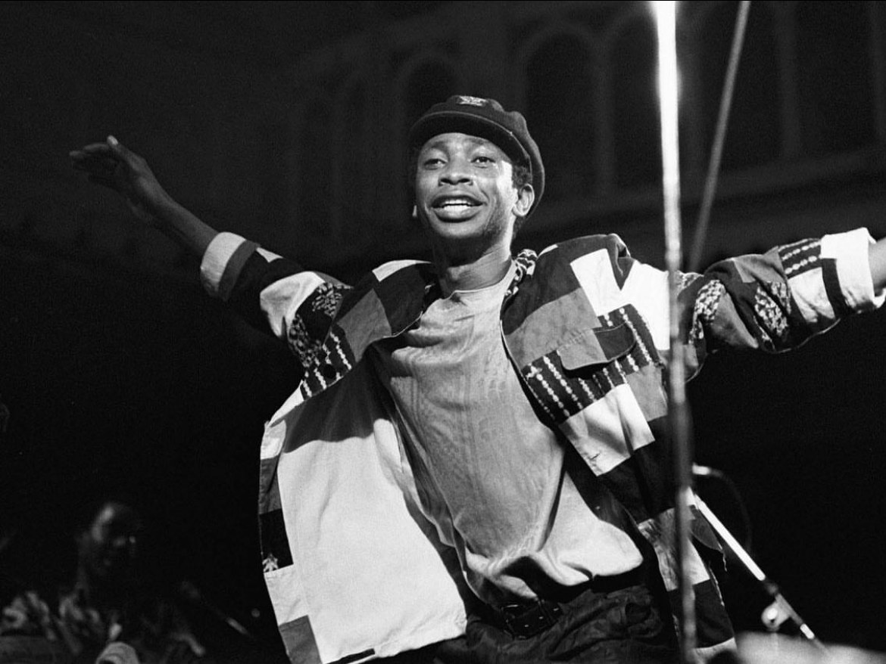
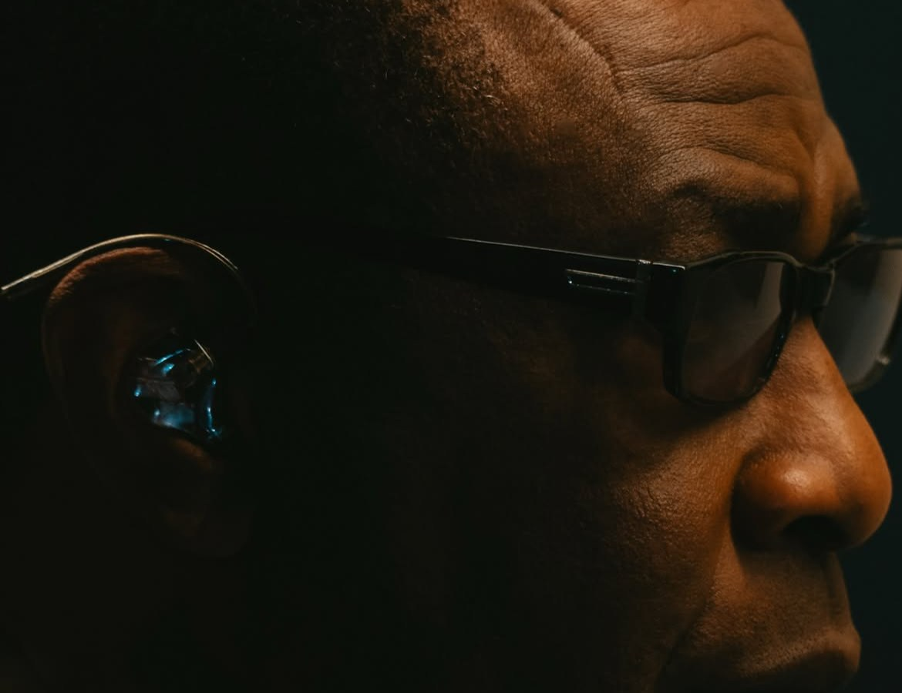
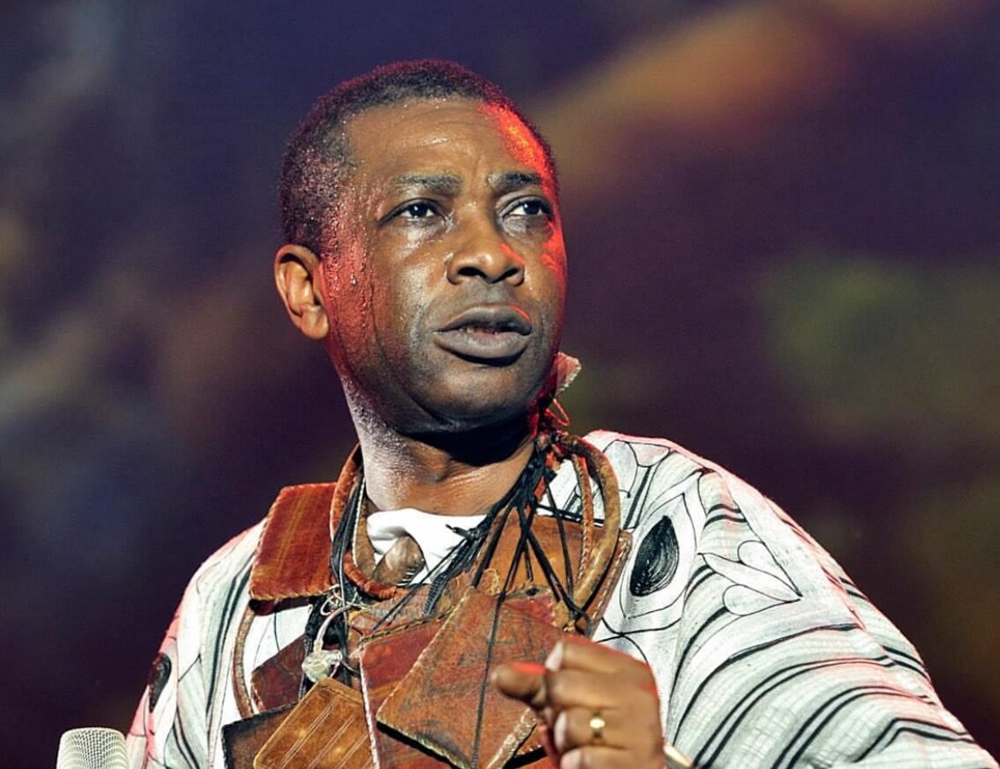

Youssou N'Dour owns a newspaper, a radio station and a TV channel
Most people know him for 7 Seconds, his 1994 hit with Neneh Cherry. Fewer know that for more than 20 years he has run his own media group in Dakar, through a standoff with a president, a failed run for the top job and offices attacked by protesters.
Outside Senegal, Youssou N'Dour is a voice. Inside Senegal, his name is also attached to a daily newspaper, a radio station, a TV channel and a news website. Since 2003 the singer has owned Groupe Futurs Médias (GFM), the company behind L'Observateur, RFM, TFM and igfm.sn.
Plenty of African artists put money into property, drinks brands or fashion lines. Very few have gone into the news, and fewer still have stayed in it this long. Here is how he did it, and why it has never been easy money.
Move 01First, the voice
He was born in Dakar on 1 October 1959 and was performing on stage by the age of 12. While still a teenager he joined the Star Band, one of the city's biggest club bands, and later went on to lead his own group, Super Étoile de Dakar. With them he became a key figure in mbalax, the Senegalese sound that blends sabar drumming with Latin, pop and other influences.
In the 1980s his music travelled. He worked with Peter Gabriel, Paul Simon and Sting, and in 1994 his duet with the Swedish singer Neneh Cherry, “7 Seconds”, from the album The Guide (Wommat), became his biggest international hit. In 2005 his album Egypt won the Grammy for Best Contemporary World Music Album. More than two decades later he's still in the room: his album Eclairer le monde – Light the World was nominated for Best Global Music Album at the 2026 Grammys.

Move 02Keep the music business at home
Fame abroad could easily have pulled him away from Dakar. Instead, he spent the money at home. His Dakar nightclub, Thiossane, became one of the city's best-known music spots, with mbalax pouring out of it most evenings. In the early 1990s he opened a recording studio, Xippi, and in the mid-1990s he started his own record label, Jololi, whose catalogue later passed to the label Prince Arts.
That is the part of the story that gets overlooked. Before he owned a single newspaper, he already owned a stage, a studio and a label: the places where Senegalese music was played, made and sold. The media group was the next step up the same ladder.
Move 03Go into the news
In 2003 he set up Groupe Futurs Médias. The daily paper L'Observateur came out that year, and on 1 September 2003 Radio Futurs Médias, better known as RFM, went on air in Dakar. The group also published a sports magazine, Tribune, and runs its own printing press.
Within a few years both the paper and the radio station were counted among Senegal's leading media. For a musician, that's a different kind of reach. A hit song plays for a few years. A newsroom shapes what a country talks about every single day.

Move 04Fight for the TV licence
Television was the obvious next step, and it turned into a fight. When he moved to launch a channel, TFM, President Abdoulaye Wade's government held the project up and questioned where the money behind it was coming from. The French businessman Vincent Bolloré, whose name came up in the speculation, publicly denied ever being a shareholder in it, directly or indirectly.
The standoff dragged on until TFM finally went on air at the start of September 2010, first licensed as a cultural channel. It was Senegal's fifth privately owned television station. The group has since added the news site igfm.sn to its newspaper, radio and TV.
Move 05Try for the top job
In January 2012 he announced that he would step away from music for politics and run for president. Senegal's Constitutional Council threw out his bid, saying he had not gathered the 10,000 valid signatures a candidate needs. He disputed the count and called the ruling a constitutional coup.
He then campaigned for Macky Sall, who beat Wade in the run-off that March. On 4 April 2012, Sall's new government named Youssou N'Dour minister of culture and tourism, later minister of tourism. He left government in September 2013, when a new prime minister, Aminata Touré, announced her cabinet without him.
It's also the moment his two worlds overlapped most openly: a man who owned a newspaper, a radio station and a TV channel was now sitting in government.
Move 06Pay the price
Owning the news means taking the heat when the country is angry. In March 2021, during the protests that followed the arrest of opposition leader Ousmane Sonko, crowds attacked the Dakar building that houses RFM and L'Observateur on the night of Thursday 4 March. TFM's offices were attacked the next day. Press freedom group Reporters Without Borders condemned the attacks on GFM along with others on Senegalese media that week.
The money side has been hard too. Running a newspaper, a radio station and a TV channel is expensive, and N'Dour has openly acknowledged that the group has gone through financial difficulties. Day to day, GFM is now led by its director general, Birane Ndour.
The takeawayWhy this is the real money move
Most artists depend on labels, radio stations and streaming apps to be heard. Youssou N'Dour built the platform himself, and more than 20 years later it is still on air and still in print. It hasn't made him the kind of easy money a drinks brand might have. What it has given him is something a hit can't: a say in how his own country gets its news.
For the African artists now launching labels, festivals and media channels of their own, his story is worth studying, because it shows both sides: the reach you get from owning the platform, and the bills and the pressure that come with it.

Sources
- Wikipedia: Youssou N'Dour
- Britannica: Youssou N'Dour
- Apple Music: Youssou N'Dour biography
- Qobuz: Youssou N'Dour biography
- Encyclopedia.com: Youssou N'Dour
- Nation: Catching up with Youssou N'Dour
- NYU Abu Dhabi Arts Center: Youssou N'Dour, 50 years of music
- Grammy.com: Youssou N'Dour nominations and wins
- Grammy.com: Best Contemporary World Music Album, 2005
- Music In Africa: Dakar's studios and clubs
- Music In Africa: Senegal music venues
- Music In Africa: Prince Arts
- Songlines: My World, Youssou N'Dour
- Culture Trip: The demise of Dakar's music clubs
- Pambazuka: Youssou N'Dour's businesses
- Le Soleil: Youssou Ndour, the inside story of an entrepreneur
- Mémoire Online: Groupe Futurs Médias, L'Observateur and RFM (2003)
- Osiris: RFM launches (1 Sept 2003)
- Osiris: RFM launched 1 September 2003; L'Observateur circulation
- Osiris: The group's paper, radio, TV and printing press (2012)
- Lingua Sinica: Groupe Futurs Médias profile
- Abidjan.net: Youssou N'Dour launches his private TV (2010)
- Afrik.com: Youssou Ndour finally launches his TV channel
- Osiris: TFM starts broadcasting
- Unifrance: Télé Futurs Médias (TFM)
- News24: Senegal's Youssou Ndour launches TV station
- Al Jazeera: Fury in Senegal as president seeks third term (Jan 2012)
- Reuters via APA: Poll ruling sparks street clashes in Senegal
- The World (BBC): Senegal upholds ruling on Wade's candidacy
- NdarInfo: Wade's candidacy validated; N'Dour's appeal rejected
- Le Matin: Youssou Ndour named minister of culture and tourism
- Nation: Youssou Ndour appointed Senegal's culture minister (Apr 2012)
- Irish Times: N'Dour named in Senegal cabinet
- Pollstar: Youssou N'Dour removed from government (Sept 2013)
- NZ Herald: Senegalese singer Youssou Ndour removed from government
- RSF: Exceptional press freedom violations in Senegal (Mar 2021)
- Senego: GFM offices attacked by protesters (Mar 2021)
- NdarInfo: After RFM and L'Obs, TFM attacked
- Senego: Youssou Ndour on GFM's financial difficulties
- Seneweb: Youssou Ndour on Groupe Futurs Médias